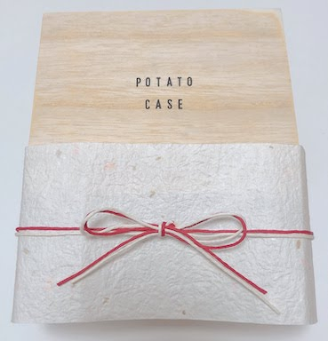

＜商品概要＞
※作るものが途中で少し変わりました。完成品の概要は「アイデアノート」一覧の「完成品のページ」をご覧ください
カバンに入れると粉々になってしまうスナック菓子を
袋ごと守ってくれるケースです。
＜作業進捗＞
ペーパーモックアップ（試作品①）

＜Q&A＞
Q:中の構造はどうするんですか？
A:ポテトチップスを袋のまま入れられるように、強度がありながらも柔軟な構造にしたいと思っています。
Q:デザインはこのままですか？
A:お菓子をオシャレに持ち歩けるようなデザインにしようと思っています。
＜追記＞
コールドモックアップを作るために、ペーパーモックアップで考えられてなかった
ケース内に入れる予定の中敷きを試作した。
コールドモックアップ（試作品②）

中敷きをプロトタイプしたときは素材が紙だったので気づかなかったのですが、柔軟性のあるプラスチック板で
試作時のままのサイズで中敷を作ったところ、袋に入れてみると口部分が閉じられませんでした。
4センチほど板をカットして、閉じるためにサイドに少し谷折りのクセをつけたことで、口が閉じられるようにしました。
＜この試作の成功・失敗体験＞
成功→少しの衝撃・圧迫からポテトチップスを守るための機能を持ったケースを試作できたこと
失敗→中敷きを組み立て式にしたので、少し組み立てるのが面倒になってしまったこと
＜考察＞
今回の施策の目的は、ポテトチップスなどの形が崩れやすいお菓子を安心して持ち運べるような、
ケースの機能を試作することでした。結果は、機能を試作できたという点で成功したと思います。
＜レビューを受けて＞（week1）
自分がどこに焦点を当てたものを作りたいのか、面白いと感じたポイントはどこなのかについて
改めて色々考え直しました。考えた結果、私はポテトチップス全体を守るケースを作るのではなく、
一枚のポテトチップスのみ守る方が面白いのでは？と考え、その方向で作ることに決めました。
試作品③

＜制作過程＞
①アタッシュケース風の名刺ケースからジャバラ部分を取り外す
②ジャバラを外したケースの内側に抗菌シートを貼る

③完成
＜この試作の成功・失敗体験＞
成功→一枚のポテトチップスを守るケースとしてイメージ通りのデザインの物が見つけられて、加工できたこと
失敗→反り返った形のポテトチップスなど、ケースに形が合わないものは閉じると割れてしまった
＜考察＞
ポテトチップス一枚をしっかり守るために、このケースを使って試作しましたが、ポテトチップスの一枚一枚の
個体差を考えきれていませんでした。また、そのまま入れるので衛生面を考えて抗菌シートを貼ったのですが、
不恰好になってしまったのでその問題も解決する必要があることがこの試作でわかりました。
試作品④

＜制作過程＞
①クリアケースの上蓋と下蓋の両方の内側に抗菌シートを貼る

②実際にポテトチップスを入れた後蓋を閉じて、サイズ感を確認
③少しシンプルすぎるので「POTATO」の文字を貼って、完成
＜この試作の成功・失敗体験＞
成功→一般的なサイズのポテトチップスなら入るケースを作ることができたこと
失敗→石鹸用のケースを代用して作ったので、何かで蓋を固定しないと蓋が開いてしまうため持ち歩きに適さない
＜考察＞
試作品③で発生したサイズ感の問題を解決するために、ちょうどいい大きさの石鹸ケースを使った試作を行いました。
ここでの試作では、一般的な大きさのポテトチップスなら大体は入るケースを作ることができました。
ただ、一枚を守るという点から見ると、いまいち頼りない見た目になってしまったので次回の試作では機能とデザインを
両立したものにしたいと考えました。また、この試作を作る中で、一枚の形をじっくり観れるようなケースの方が
より面白いかもしれないと思いました。
＜中間レビューを受けて＞（week1.5）
試作品⑤
＜制作過程＞

ムービープロトタイプ（試作品⑤用）
iframe＜この試作の成功・失敗体験＞
成功→
失敗→
＜考察＞
＜中間レビューを受けて＞（week2）
完成品
価格：3500円
＜制作過程＞
①
②
③
④
⑤
＜この試作の成功・失敗体験＞
成功→
失敗→
＜考察＞
＜レビューを受けて＞（week３）
＜まとめ＞